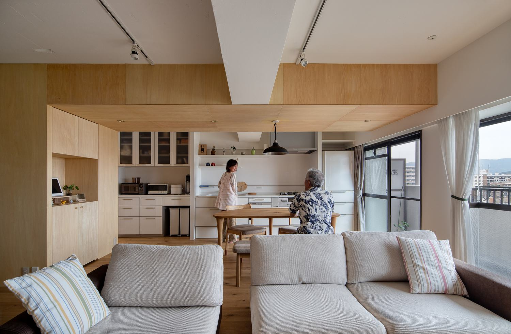

集合住宅リノベーション
桜ヶ丘の住居
集合住宅リノベーション ／ 福岡県春日市
福岡県春日市、桜ヶ丘の集合住宅一室をリノベーション。木質のしつらえで暮らしに寄り添う住空間へと更新した。
- 敷地
- 福岡県春日市
- 構造
- 鉄筋コンクリート造
- 種別
- 改修
- 用途
- 住宅
- 施工
- (株)イクスワークス
- 竣工
- 2021.12
- 写真
- Kouji Okamoto / Techni Staff


集合住宅リノベーション ／ 福岡県春日市
福岡県春日市、桜ヶ丘の集合住宅一室をリノベーション。木質のしつらえで暮らしに寄り添う住空間へと更新した。
